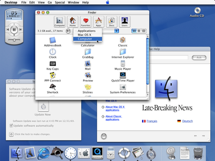

Apple Silicon y la visión que terminó dominando la industria
Apple siempre entendió algo que el resto de la industria tardó décadas en aceptar:
cuando el hardware y el software se diseñan juntos el resultado es muchísimo más eficiente.
La visión de Steve Jobs siempre fue controlar la experiencia completa.
Hoy Apple Silicon demuestra que esa estrategia estaba adelantada a su tiempo.